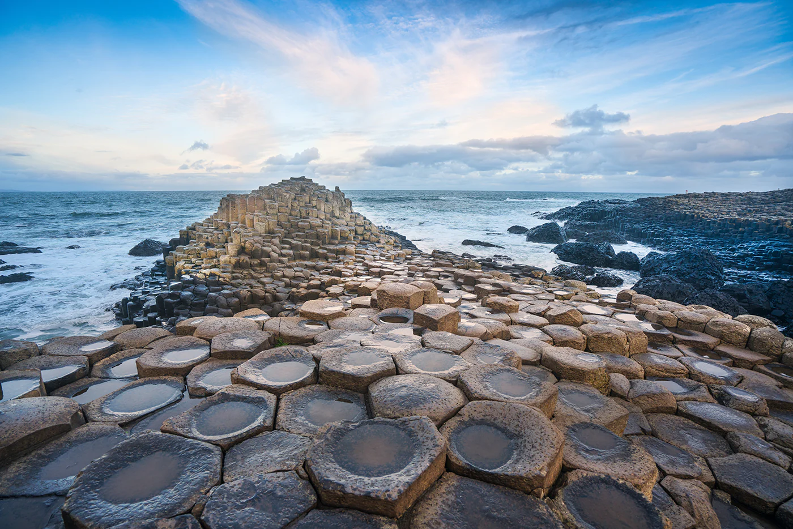

About Giant's Causeway
The Giant's Causeway is a UNESCO World Heritage site located on the northeast coast of Northern Ireland. Famous for its unique hexagonal basalt columns formed by ancient volcanic activity, it is a stunning natural wonder surrounded by myths and legends. The area attracts visitors worldwide who come to admire the dramatic coastal scenery and explore the fascinating geology.
Quick Facts
- Location: County Antrim, Northern Ireland
- Coordinates: 55.2408, -6.5116
- Formation: Volcanic activity about 60 million years ago
- Type: Natural geological formation
- UNESCO Status: World Heritage Site
- Open to the public?: Yes, visitor centre and trails available
Note when going here
Wear comfortable shoes for walking on uneven rocks and coastal paths. The site can be windy and weather conditions change rapidly, so dress accordingly. The visitor centre offers informative exhibits and guided tours that enhance the experience.
Visitor Comments
No comments yet. Be the first!